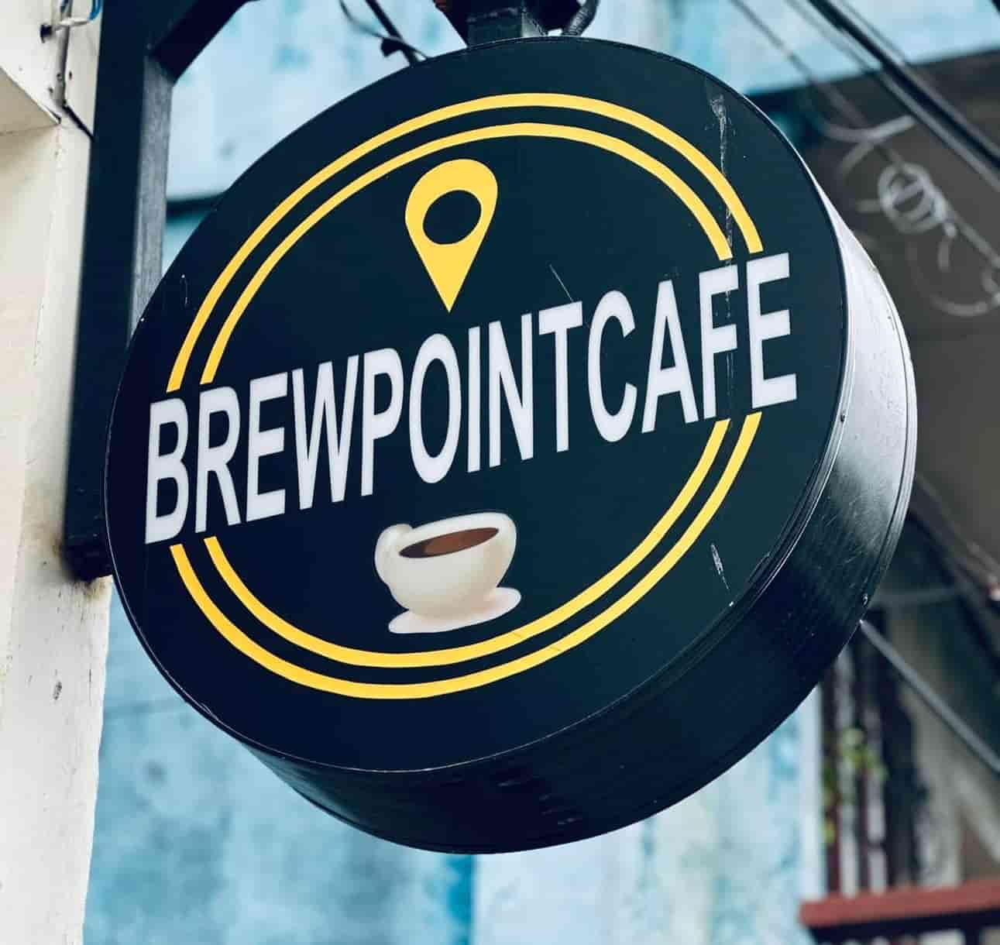
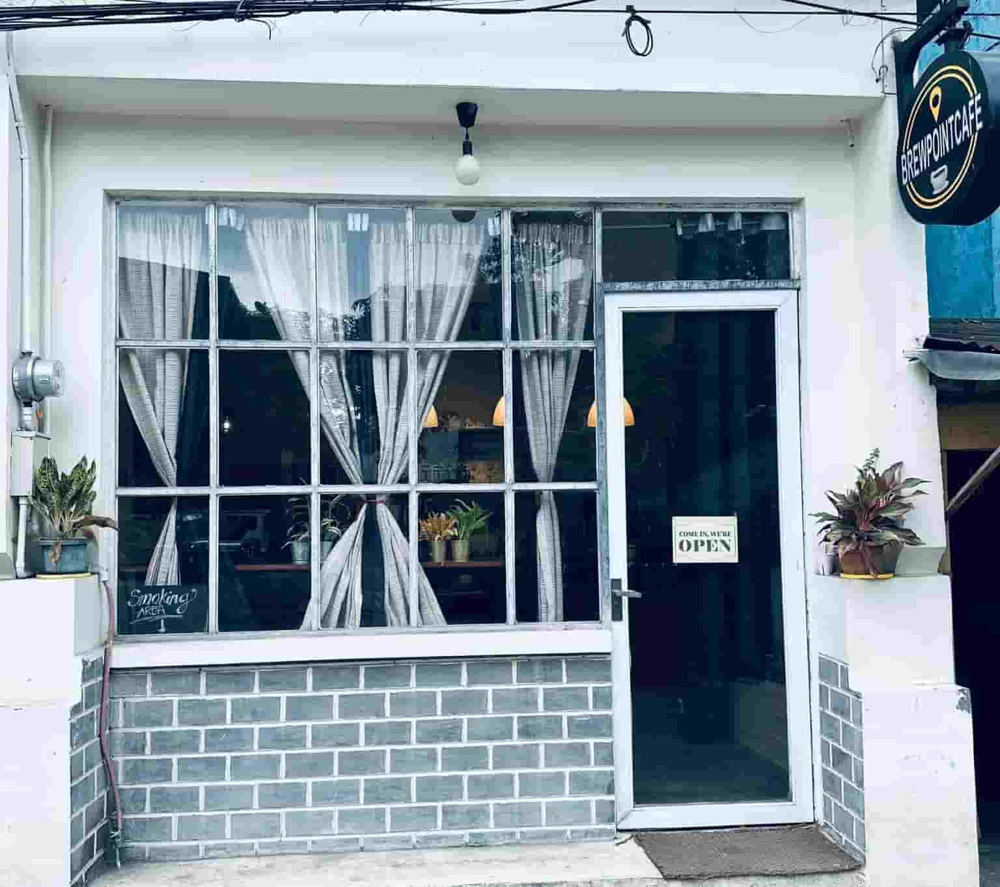
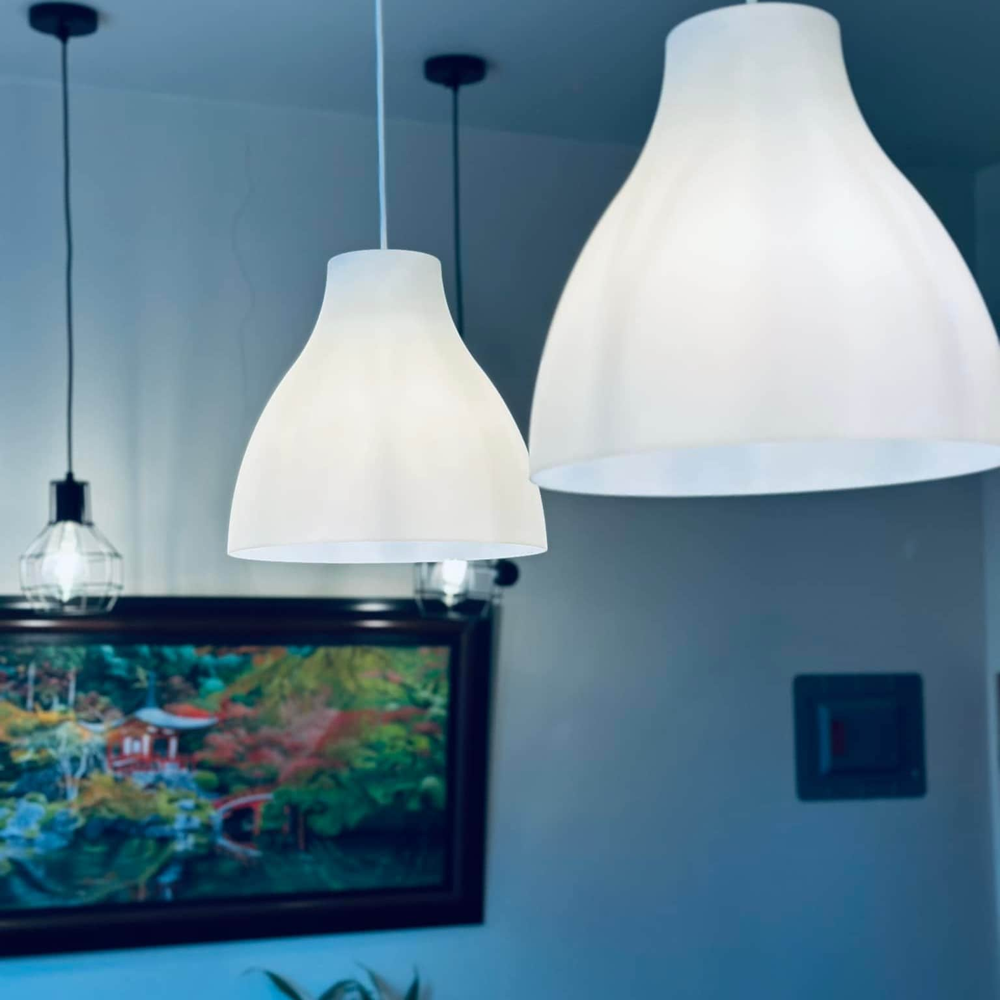

☰



The story of BrewPoint Café begins with a deep-rooted passion for coffee, shaped by over a decade of experience in the industry. What started as a professional journey became something more, an emotional and creative connection to the craft. Coffee was never just a product; it was a ritual, comfort, and eventually, a calling. During the uncertainty of the pandemic, while many stepped back, a long-held dream quietly came to life: the vision of a café built not just for business, but for sharing something meaningful with others. What makes BrewPoint Café truly special isn’t just the quality of its offerings, but the intention behind them. Every item on the menu from handcrafted drinks to thoughtfully prepared meals is made with care and purpose. There’s a strong belief in doing things the right way, valuing authenticity over convenience. Instead of following trends or cutting corners, the café focuses on creating something genuine and memorable. It’s not just about serving coffee or food, it’s about honoring the craft and sharing it with the community in a meaningful way.
Even the location tells a story. Situated in a quiet, unassuming area, the café wasn’t placed where it could easily gain foot traffic. Instead, it was placed where it could be most meaningful. The owner wanted to bring something special to the community, a place where families, friends, and even solo visitors could enjoy moments of peace and pleasure. Stepping into BrewPoint Café feels like entering a warm kitchen at home. It’s cozy, intimate, and thoughtfully designed to invite people to stay awhile. The soft lighting, the warm colors, and the aroma of freshly brewed coffee create an atmosphere that encourages connection and relaxation.


There’s a natural flow to the experience at BrewPoint Café, a quiet rhythm that invites guests to pause and be present. From the gentle hum of conversation to the aroma of freshly brewed coffee, every detail is designed to create a sense of ease and comfort. The carefully crafted drinks and freshly made meals don’t just satisfy, they leave a lasting impression. It’s a place where the pace slows, flavors stand out, and every visit becomes a meaningful part of the day.